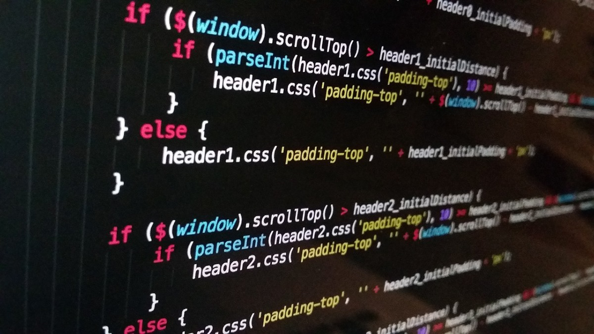
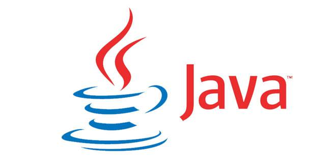

Язык программи́рования формальный язык, предназначенный для записи компьютерных программ. Язык программирования определяет набор лексических, синтаксических и семантических правил, определяющих внешний вид программы и действия, которые выполнит исполнитель под её управлением. Со времени создания первых программируемых машин человечество придумало более восьми тысяч языков программирования. Каждый год их число увеличивается. Некоторыми языками умеет пользоваться только небольшое число их собственных разработчиков, другие становятся известны миллионам людей. Профессиональные программисты могут владеть несколькими языками программирования. Язык программирования предназначен для написания компьютерных программ, которые представляют собой набор правил, позволяющих компьютеру выполнить тот или иной вычислительный процесс, организовать управление различными объектами, и т. п. Язык программирования отличается от естественных языков тем, что предназначен для управления ЭВМ, в то время как естественные языки используются, прежде всего, для общения людей между собой. Большинство языков программирования использует специальные конструкции для определения и манипулирования структурами данных и управления процессом вычислений. Как правило, язык программирования определяется не только через спецификации стандарта языка, формально определяющие его синтаксис и семантику, но и через воплощения (реализации) стандарта — программные средства, обеспечивающих трансляцию или интерпретацию программ на этом языке; такие программные средства различаются по производителю, марке и варианту (версии), времени выпуска, полноте воплощения стандарта, дополнительным возможностям; могут иметь определённые ошибки или особенности воплощения, влияющие на практику использования языка или даже на его стандарт.